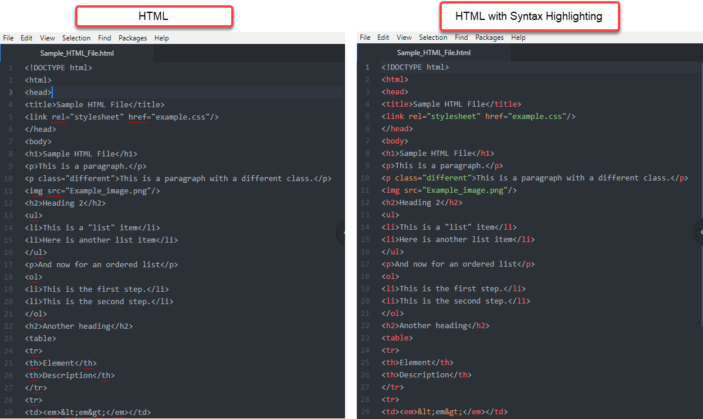

Follow these step-by-step instructions for set up and use. Syntax highlighting
displays source code in different colors and fonts, so it's easier to distinguish code
elements and identify errors.
HTML and Markdown syntax preview come pre-loaded in Atom, but RST does not. You
will install the RST syntax highlighting package and then learn how to enable syntax
highlighting for all of these languages.

-
Install the RST Syntax Highlighting package:
-
Open Atom.
-
Open Settings by clicking on the
appropriate path for your operating systerm:
-
On the left menu, click Install.
-
In the Search Packages box, type:
language-restructuredtext. The
language-restructuredtext package box appears. View an image of the install
packages screen.
-
Click Install.
-
Open a new file.
-
Type a few lines of HTML, Markdown, or RST.
-
Save the file using the appropriate language file extension from the table
below.
| Language | File Extension |
|---|
| HTML |
filename.htm or filename.html |
| Markdown |
filename.md |
| RST |
filename.rst |
The file now appears with syntax highlighting.
Note:
- After the initial save, the file will always re-open with syntax
highlighting.
- Any previously saved .htm, .html, .md, or .rst file will open with
syntax highlighting.
- To "turn off" syntax highlighting for a particular language, you
will need to disable the syntax highlighting package for that
language. To do that, go to . You will see all of your currently installed
packages. Find the appropriate package and click
Disable.